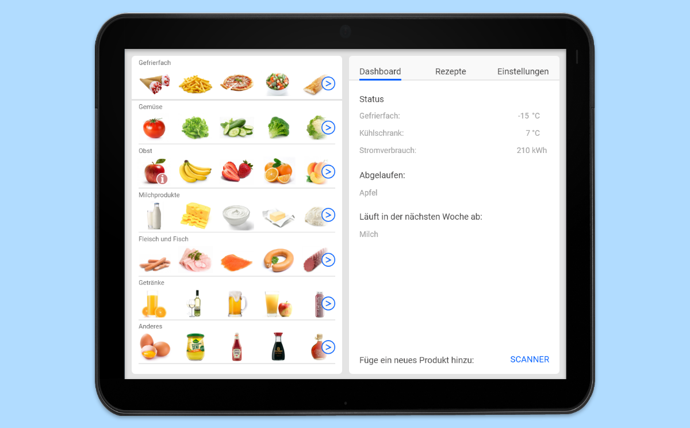

Smart Fridge App
Summary
This App is a possible Interface of a fictitious smart fridge. The task was to create a visually appealing Interface for Tablets with consistant design and an intuitve flow. We've built this App piece by piece from sketches to a high fidelity prototype over the course of six iterations. This project was a group effort between my fellow student Jana Mühleisen and me. We have built this project in Adobe Xd.
Process
This is one of our first digital drafts. The visuals are kept on a rather simple level, because our focus was still on the bare concept of the application, at this point in time. Even though this is a very early draft, our rough concept for this app was already in place. On the left-hand side one should be able to see all of the contents of the fridge. The right-hand side is where the most important information and navigation elements are.
Three iteration loops later, the flow through the application is almost completly finished. The interface also gained a big deal of detail. We decided on using photos of food to show the contents of the fridge. We placed the food roughly according to the food pyramid.

Final Product
During the final few iteration levels we mostly worked on details and consistency in both visual appearance and fidelity of the screens.
Aside from building the screens, our task contained linking and animating everything as well. In the picture there are all screens our final prototype contains. Each button has an animated button state. Some Screens also work with gestures like, for example, the recipe pages.
The following screens are shown here: a detail page about an apple, the recipie generation feature, a step of the recipe feature, the settings, the scanner to add freshly bought grocerys to the fridge system and a warning pop-up.